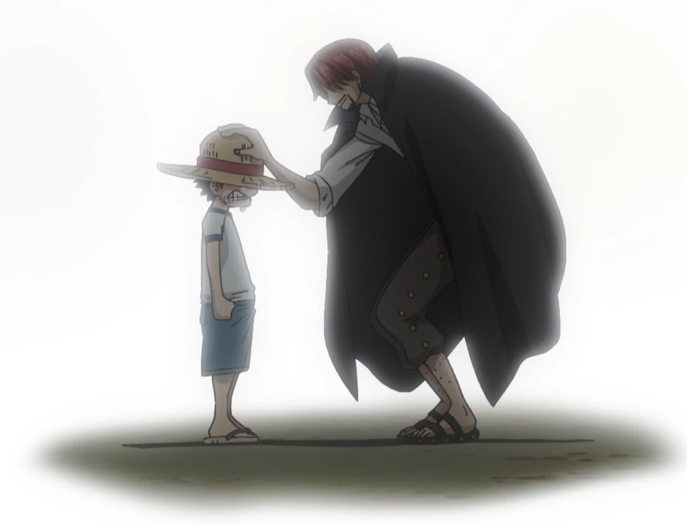

East Blue Saga
Romance Dawn Arc

Arc ini memperkenalkan Luffy, yang bercita-cita menjadi Raja Bajak Laut setelah makan Buah Iblis
Gomu Gomu no Mi. Dia memulai perjalanannya dengan bertemu Koby, seorang anak yang ingin
bergabung dengan Angkatan Laut, dan mengalahkan bajak laut Alvida.
Episode: 1-3
Orange Town Arc
Syrup Village Arc

Baratie Arc
Arlong Park Arc
Loguetown Arc
Buggy's Crew Adventure Chronicles Arc

Warship Island Arc